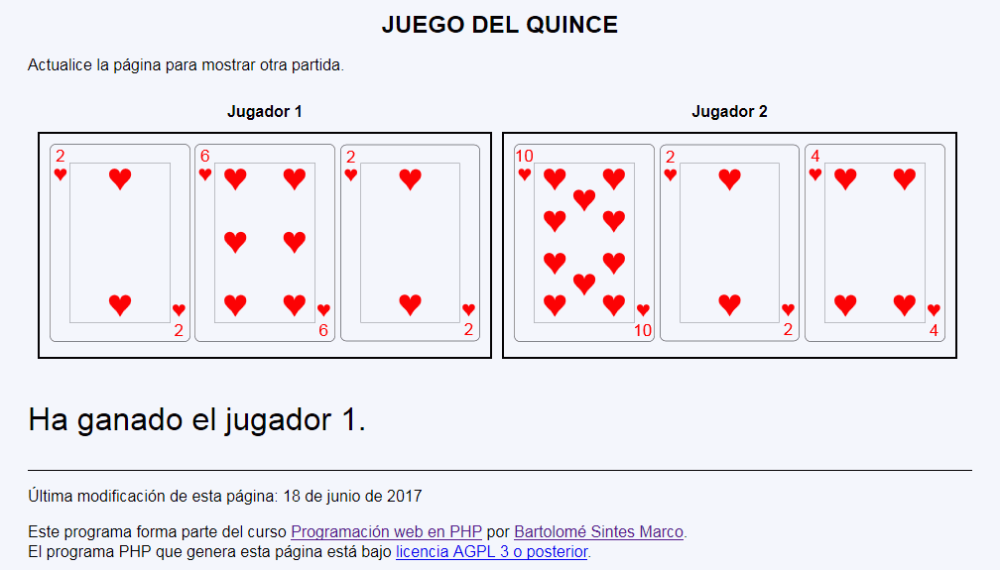
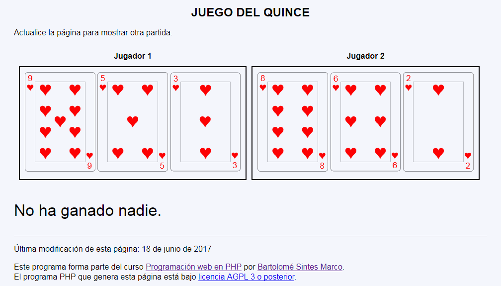
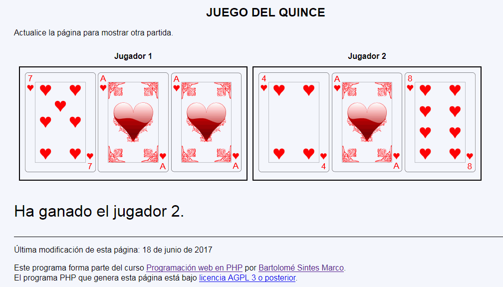
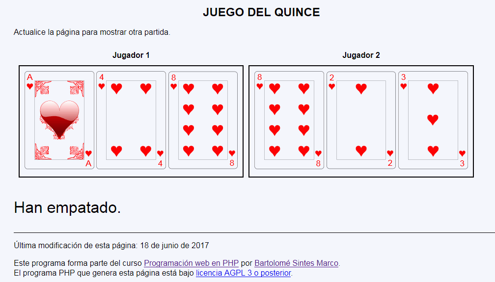

Juego del quince - Ejemplo de programa
Nota: El día del examen los alumnos no tienen acceso a este ejemplo, solamente tienen acceso a las capturas del apartado anterior.
Un ejemplo de programa puede probarse en la ventana siguiente:
En este ejercicio se debe crear un programa que muestre una partida de un juego de cartas muy sencillo: El juego del quince.




<h1>Juego del quince</h1>
<p>Actualice la página para mostrar otra partida.</p>
<table style="border-spacing: 10px;">
<tr>
<th>Jugador 1</th>
<th>Jugador 2</th>
</tr>
<tr>
<td style="border: black 2px solid; padding: 10px;">
<img src="img/c1.svg" alt="1" height="200" />
<img src="img/c4.svg" alt="4" height="200" />
<img src="img/c8.svg" alt="8" height="200" />
</td>
<td style="border: black 2px solid; padding: 10px;">
<img src="img/c8.svg" alt="1" height="200" />
<img src="img/c2.svg" alt="4" height="200" />
<img src="img/c3.svg" alt="8" height="200" />
</td>
</tr>
</table>
<p style="font-size: 200%;">Han empatado.</p>
Nota: El día del examen los alumnos no tienen acceso a este ejemplo, solamente tienen acceso a las capturas del apartado anterior.
Un ejemplo de programa puede probarse en la ventana siguiente: